משנה 1: כד ברשות הרבים
מי ששובר חפץ שהושאר ברשות הרבים פטור, אבל אם הוא ניזוק, בעל החפץ משלם. בעל הכד שנשבר שם משלם על מה שהוא גרם.
כד שהשאיר ברשות הרבים
- אדם השאיר כד ברשות הרבים ואחר בא ונתקל בו ושברו: פטור.
- אם הוא נפגע על ידה, בעל החבית חייב על נזקו.
- אדם אין לו רשות להשאיר את חפציו ברשות הרבים.
כד שנשבר ברשות הרבים
- אם כדו של אדם נשבר ברשות הרבים, ואחר החליק על המים או נפגע מהחרסים, הוא חייב.
- רבי יהודה: אם שבר במתכוון הוא חייב; אם שלא במתכוון הוא פטור.
הערות קהתי
- הגמרא קוראת את "בכוונה" של רבי יהודה כמשמעות שהוא התכוון לזכות בשברים ובמים. אם לא התכוון, היה זה אונס והוא פטור.
- אפילו אם הפקיר את הכד, הוא עדיין חייב על הנזק, כמו בבור. אם אדם נפל לבור ומת, הבעלים אינם משלמים כופר, אבל על פציעה הם משלמים.
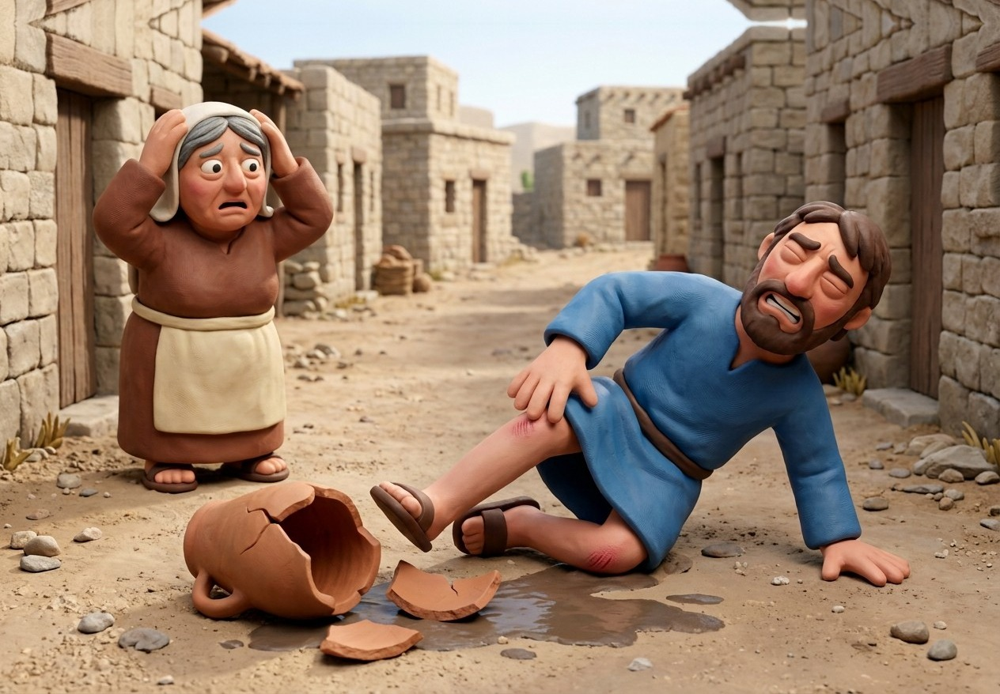

 12
12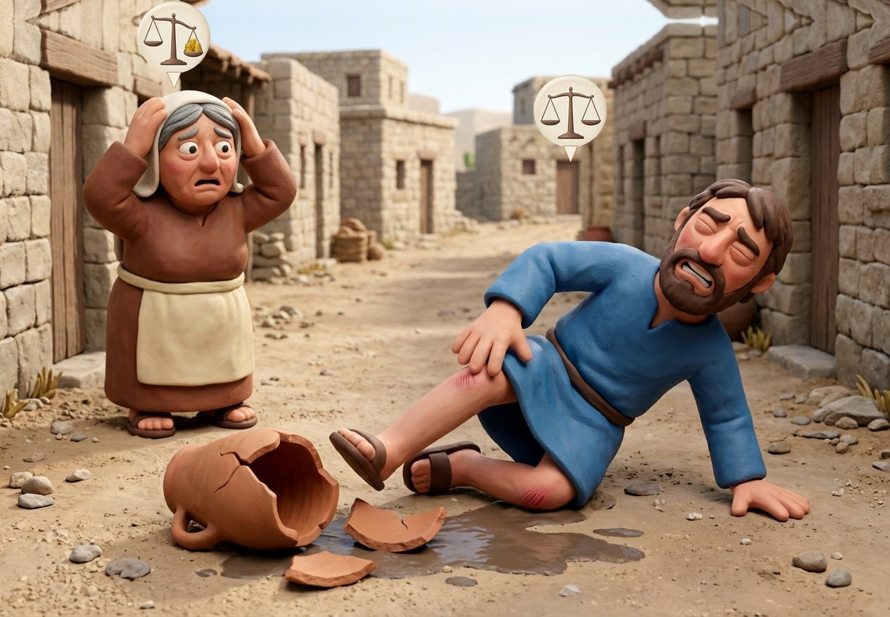
 12
12
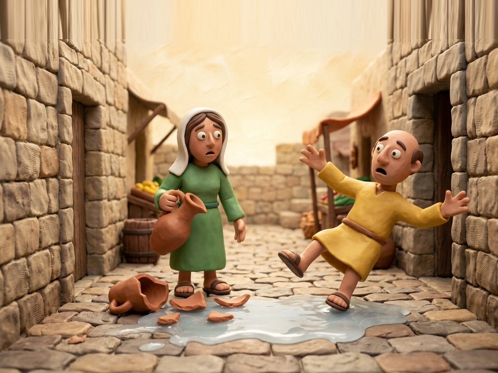
?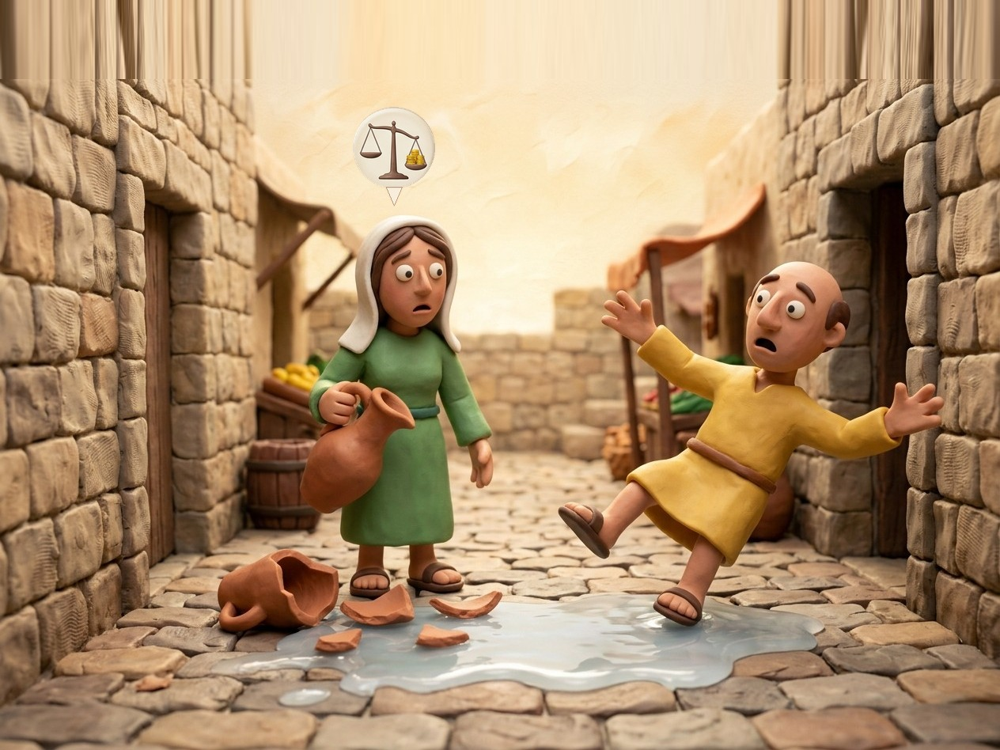
 ?
?
משנה 2: מים, קוצים וזכוכית
מי ששופך מים לרשות הרבים, מטמין שם קוצים או זכוכית, או מפיל לתוכה גדר קוצים, משלם על הנזק.
במה הוא חייב
- אם אדם שפך מים ברשות הרבים ואחר ניזוק, הוא חייב על נזקו.
- אם הסתיר קוצים או זכוכית, או עשה גדרו מקוצים, או שגדרו נפל לרשות הרבים ואחרים נפגעו, הוא חייב על נזקם.
למה
- אפילו אם ניסה להרחיק חומרים מזיקים מדרכם של אנשים, הוא אחראי לנזק שהם גורמים.
- חכמים ראו ברשות הרבים כשייכת לכולם, לכן אף אחד לא רשאי לשים שם חומר מסוכן.
הערות קהתי
- אפילו בעונת הגשמים, כשמותר לשפוך מים לרשות הרבים, הוא חייב על נזק שהם גורמים.
- אם בנה את גדר הקוצים שלו בתוך רשותו והתיישב ניזוק משום שהתחכך בו, הוא פטור, כי אנשים בדרך כלל לא מתחככים בקירות.
? ?
?
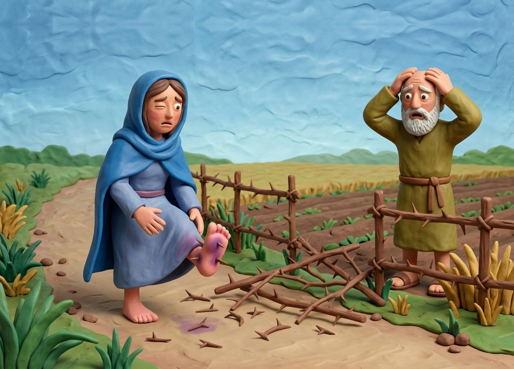
?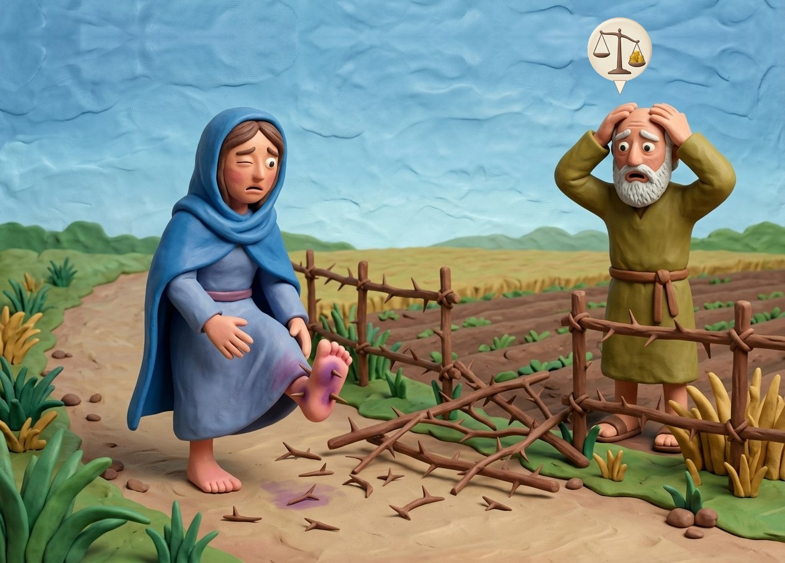
 ?
?
משנה 3: תבן וזבל ברשות הרבים
מה שאדם מוציא לרשות הרבים ועושה בו נזק, כל אחד יכול לקחת, והוא עדיין משלם על הנזק.
תבן וקש
- אדם הניח תבן קצוץ וקש ברשות הרבים לעשות זבל ואחר ניזוק: חייב על הנזק, וכל הקודם זכה בהם.
- תוצאה כפולה: כל אחד יכול לקחת את הקש, אז זה כבר לא באמת שלו, ובכל זאת הוא עדיין משלם על הנזקים.
- רבן שמעון בן גמליאל: כל המניח דברים מפריעים ברשות הרבים והם גורמים נזק חייב לשלם, ומי שבא ראשון יכול לזכות בהם. (קולפ שואל האם זה באמת חולק על הדעה הראשונה.)
גללי בהמה
- אם אדם הפך גלל ברשות הרבים ואחר ניזוק, הוא חייב.
- הזבל היה הפקר; כשהפך אותו הוא קנה אותו, לכן עליו לוודא שלא יזיק לאחרים.
הערות קהתי
- החכמים הפקירו את התבן כקנס, כדי שלא יקלקל את רשות הרבים.
- "כל המקלקלין את רשות הרבים" של רבן שמעון בן גמליאל כולל גם את אלו שמוציאים דברים ברשות, כמו זבל שהוצא לזמן המותר.
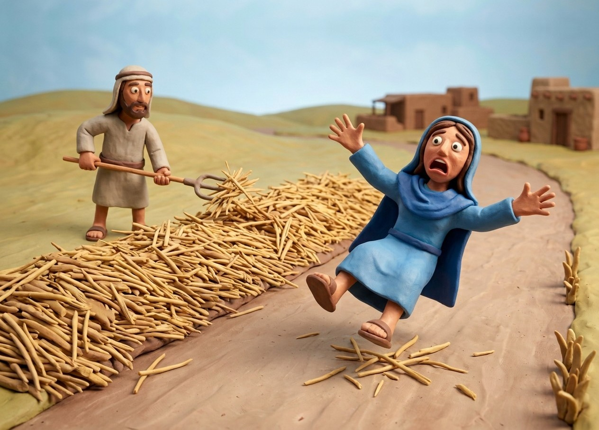
?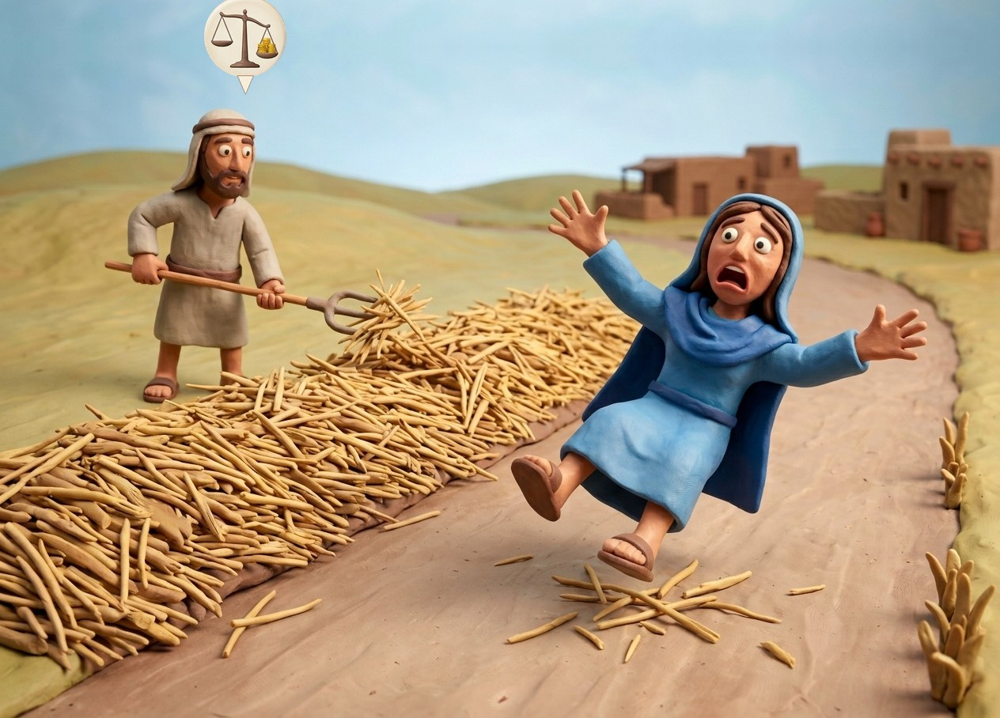
 ?
?
משנה 4: שני קדרים
אם נכשל אחד ממוכרי הכלים והאחד שאחריו נפל עליו, הראשון משלם על הנזק שגרם, אם היה יכול לקום בזמן.
המקרה
- שני קדרים היו הולכים אחד אחרי השני, הראשון מעד ונפל, והשני נפל על הראשון: הראשון חייב בנזק לשני.
- הוא חייב אם יכול היה לקום לפני שהשני מעד עליו, שכן אז היה עליו להיזהר יותר. אם לא יכול היה לקום בזמן, זה היה תאונה והוא פטור.
הערות קהתי
- רב נחמן בר יצחק סובר שהראשון חייב גם אם לא יכול היה לקום, אם יכול היה להזהיר את מי שמאחוריו.
- הוא משלם רק על נזק גוף לשני. אם רק כליה ניזוקו הוא פטור, כיוון שזה כמו נזק של בור, והבור אינו מחייב על כלים.
הלכה
- הראשון חייב רק אם יכול היה לקום לפני שהשני מעד בו. הרי"ף והרמב"ם פוסקים כך.
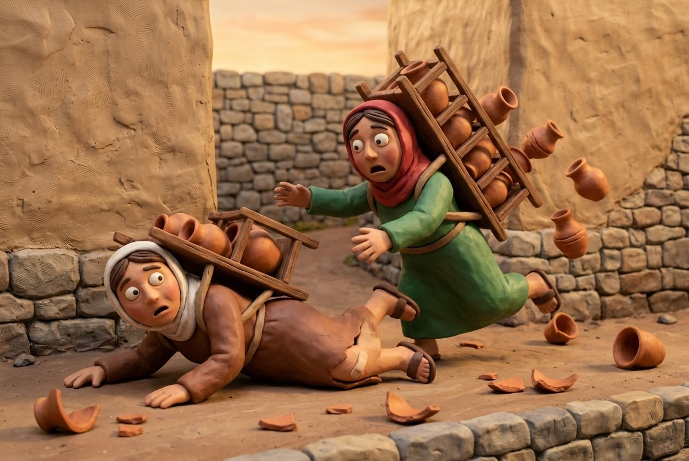
?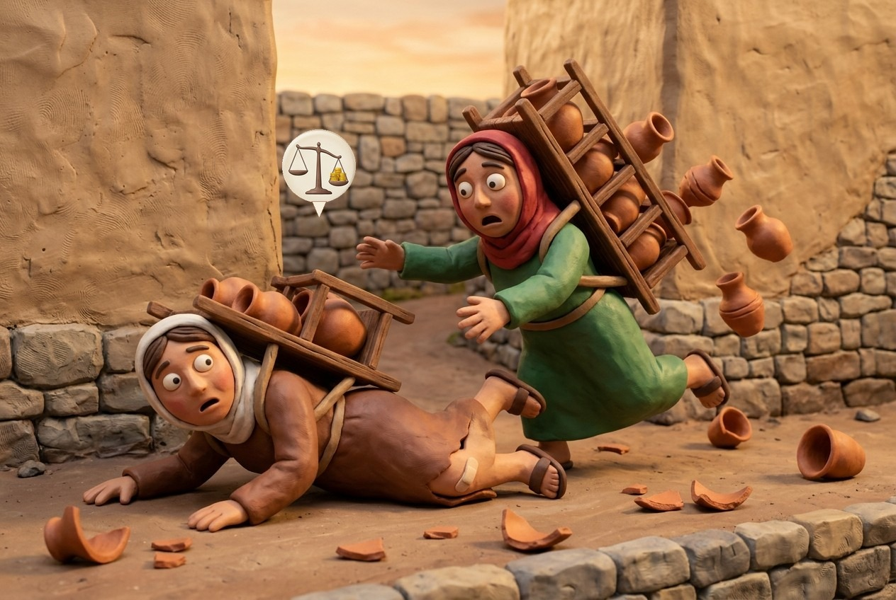
 ?
?
משנה 5: כד וקורה
ברשות הרבים לכל אחד יש זכות ללכת. מי משלם כאשר הקורה שוברת את החבית תלוי במי היה לפנים, ובעצירה פתאומית או אזהרה.
זה לצד זה
- אחד בא נושא חבית ואחר נושא קורה, והחבית נשברה בידי הקורה: בעל הקורה פטור, מפני ששניהם רשאים לילך בדרך.
- הערה: ההסבר של ר' קולפ אומר שבעל הקורה חייב כאן. זה סותר את נוסח המשנה; המחבר בדק, וקהתי מאשר את המשנה: הוא פטור.
הקורה לפנים
- בעל הקורה בא ראשון ובעל הכד בא אחריו, והכד נשבר על ידי הקורה: בעל הקורה פטור. אם הוא עצר פתאום, הוא חייב. אם הוא אמר "עצור" לבעל הכד, הוא פטור.
- אם בעל החבית נכנס לתוכו זו אשמתו שלו. עצירה פתאומית בלי אזהרה היא דבר שבעל הקורה היה צריך לצפות; אזהרה פוטרת אותו.
החבית שלפנים
- בעל הכד בא ראשון ובעל הקורה בא אחריו: בעל הקורה חייב. אם בעל הכד עצר פתאום, בעל הקורה פטור. אם בעל הכד אמר "עצור" לבעל הקורה, בעל הקורה חייב.
- וכך גם מי שבא עם נרו ומי שבא עם פשתנו.
מה זה מלמד
- זכויות יחיד ברשות הרבים יכולות להתנגש; מהדוגמאות אנו יכולים להסיק עקרונות כלליים על הזכויות שיש לאנשים שם.
האם בעל הקורה חייב?
| המצב | בעל הקורה |
|---|---|
| הם הולכים זה לצד זה | פטור |
| קורה מלפנים, בעל החבית הולך לתוכה | פטור |
| קורה מלפנים, בעל הקורה עצר פתאום | חייב |
| קורה מלפנים, בעל הקורה אמר "עצור" | פטור |
| כד מלפנים, בעל הקורה נתקל בה | חייב |
| כד מלפנים, בעל הכד עצר פתאום | פטור |
| כד מלפנים, בעל הכד אמר "עצור" | חייב |
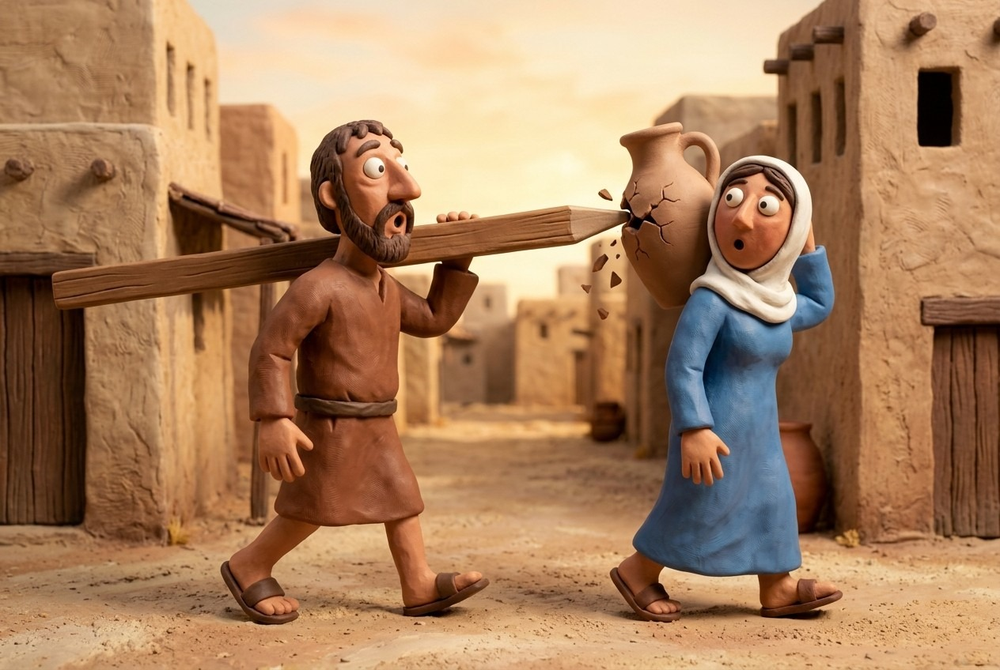
?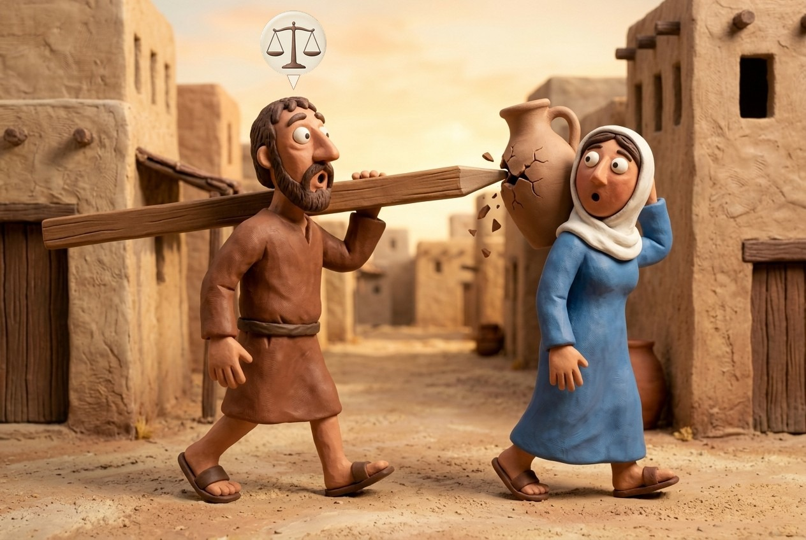
 ?
? ?
?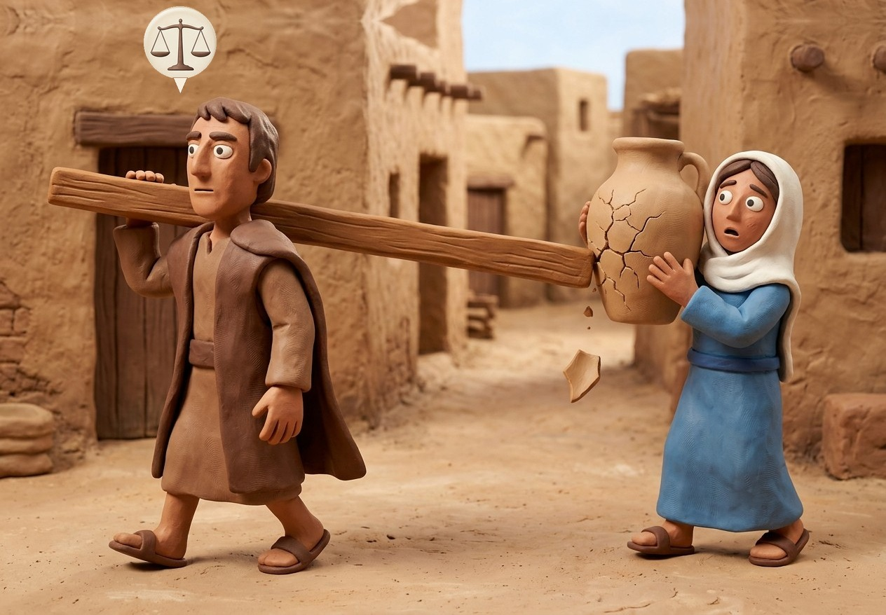
 ?
?
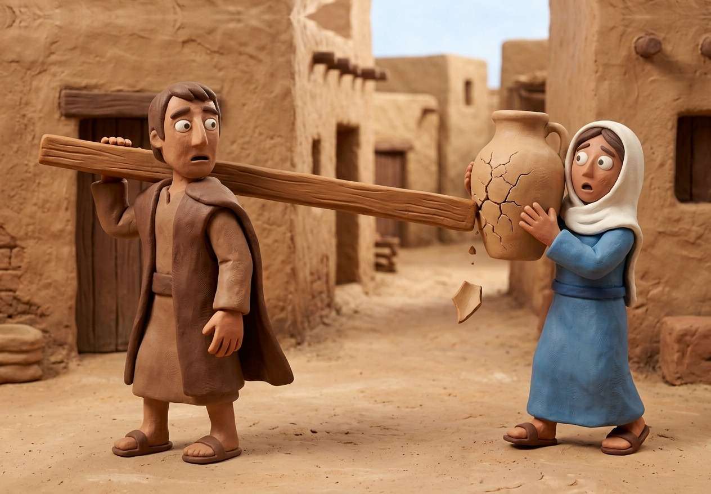
?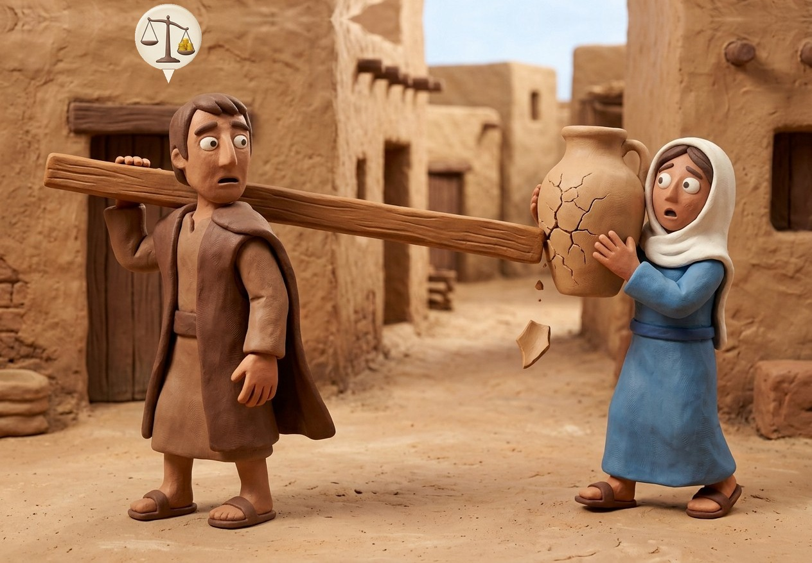
 ?
?
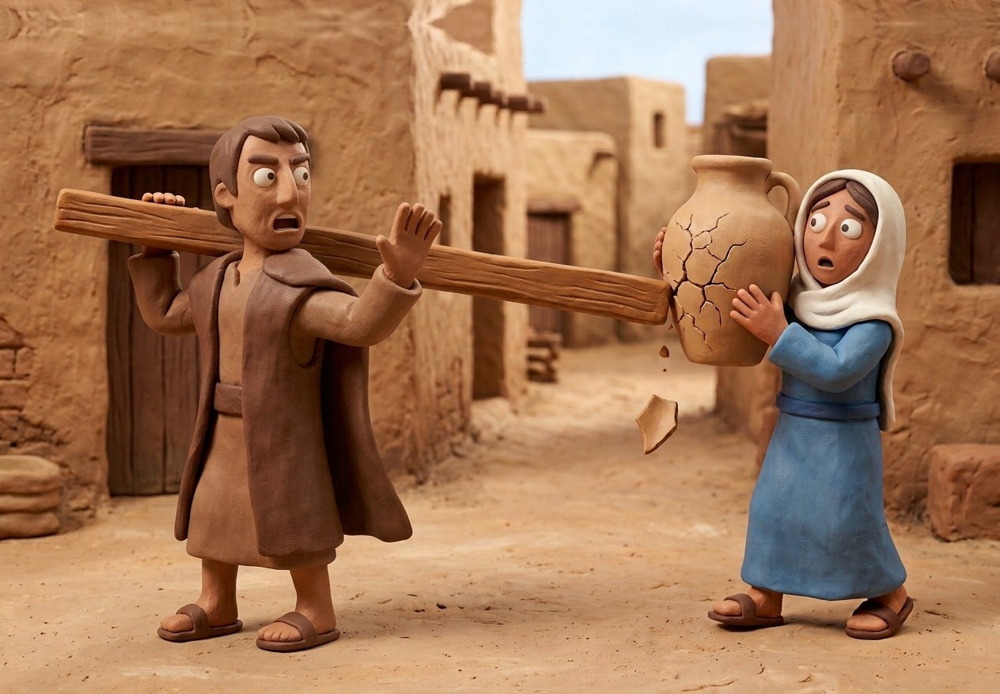
? ?
?
משנה 6: ריצה והליכה
שני אנשים ברשות הרבים, אחד רץ ואחד מהלך או שניהם רצים, שמזיקים זה את זה: אף אחד אינו חייב.
המקרה
- שניים היו הולכים ברשות הרבים, אחד רץ והשני מהלך, או שניהם רצים, והזיקו זה את זה: אף אחד אינו חייב.
- לאנשים יש זכות ללכת ברשות הרבים, ויש להם זכות לרוץ. ריצה כשלעצמה אינה רשלנות, ולכן אין בה חבות נוספת.
הערות קהתי
- הגמרא אומרת שה"רץ" הוא בערב שבת או ביום טוב, כאשר ריצה מותרת. בימים אחרים רץ שפוגע בהולך חייב. אם שניהם רצו, שניהם פטורים, שכן שניהם יצאו מהרגיל. קהתי מצטט את הרמב"ם (הלכות חובל ומזיק 6:9) על כך.
 12
12 12
12משנה 7: ביקוע עצים
מי שמבקע עצים ופוגע באדם חייב, בין אם הוא והניזוק ברשות הרבים ובין אם ברשות הניזק.
המקרה
- אדם היה מבקע עצים ברשות היחיד והזיק למישהו ברשות הרבים, או היה ברשות הרבים והזיק למישהו ברשות היחיד, או היה ברשות היחיד והזיק למישהו ברשות היחיד אחרת: חייב.
- אדם רשאי לעבוד במקצוע שהוא בוחר, אך המקצוע אינו רשאי לגרום נזק לאנשים אחרים; בכל מקום שהוא מבקע ובכל מקום שהנזק נגרם, הוא חייב.
?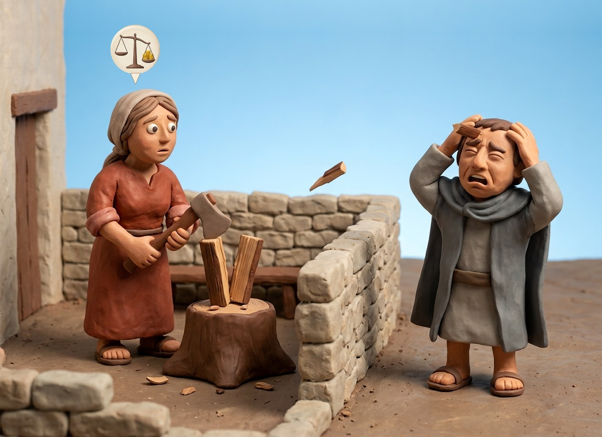
 ?
?
משנה 8: כששני שוורים או שני אנשים פוגעים זה בזה
שני שוורים או שני אנשים שהזיקו זה את זה משלמים על העודף, ההפרש בין שני הנזקים: חצי ממנו לשוורים תמים, כולו לשוורים מועדים ולאנשים.
המקרים במשנה
- שני שוורים תמים שהזיקו זה את זה: הבעלים משלם חצי נזק על העודף.
- אם שניהם מועדים: נזק שלם על העודף.
- אחד תם ואחד מועד: המועד משלם נזק שלם על העודף; התם משלם חצי נזק על העודף.
- שני אנשים שהזיקו זה את זה: נזק שלם על מי שספג את העודף.
- אדם ושור תם: האדם משלם נזק שלם; בעל השור משלם חצי נזק.
- רבי עקיבא: גם אם שור תם הזיק אדם, משלמים נזק שלם על מי שספג את התוספת.
רקע
- מועד הועדה נגדו: בעליו משלם נזק שלם מיטב הארץ. שור תם עולה לבעליו חצי נזק, מערך השור עצמו, כך שהוא לעולם לא משלם יותר ממה ששור זה שווה.
- אדם הוא תמיד מועד.
הערות קהתי
- התשלום הוא רק על ההפרש. דוגמה: שור אחד עשה נזק של 100 והשני 40, אז ההפרש הוא 60. שני שוורים תמים: הבעלים הראשון משלם חצי מזה, 30. שני מועדים: הוא משלם את כל זה, 60.
- לגבי מועד כנגד שור תם קהתי נותן שתי קריאות. הרא"ש קורא "מותר" כהפרש בין הנזקים, כך שהמותר הוא 60 ומשתלם במלואו על ידי המועד. הרמב"ם קורא זאת כהפרש בין התשלומים שכל אחד חייב: המועד חייב 100, השור התם חייב מחצית מ-40, שזה 20, ולכן המועד משלם 80.
הלכה
- ההלכה כדעה הראשונה: תם שהזיק אדם משלם רק חצי נזק. אינה כרבי עקיבא.
מי משלם על העודף
| מי פגע בזה | התשלום |
|---|---|
| שני שוורים תמים | חצי נזק |
| שני מועדים | נזק שלם |
| אחד מועד ואחד תם | המועד משלם נזק שלם; התם חצי |
| שני אנשים | נזק שלם |
| אדם ושור תם | האדם משלם נזק שלם; בעל השור חצי (רבי עקיבא: שלם) |
משנה 9: מכירת השור החי וחלוקתו
התורה אומרת למכור את השור החי ולחלוק את הכסף. המשנה מראה איך זה יוצא כאשר שני השוורים שווים סכומים שונים.
הפסוק
- שמות כא:לה: וכי יגוף שור איש את שור רעהו ומת ומכרו את השור החי וחצו את כספו וגם את המת יחצון. זהו שיטת התשלום עבור שור תם.
המקרים
- שור ששווה 100 נגח שור ששווה 200 והנבלה אינה שווה כלום: בעל השור שנגח לוקח את השור החי.
- שור ששווה 200 נגח שור ששווה 200 והנבלה אינה שווה כלום: רבי מאיר היה מיישם את הפסוק על ידי מכירת השור החי וחלוקת מחירו.
- רבי יהודה: זו ההלכה, אבל היא ממלאת רק חצי מהפסוק. אם שור ששווה 200 נגח שור ששווה 200 והנבלה שווה 50, כל אחד לוקח חצי מהשור החי וחצי מהשור המת.
- עם נבלה של 50 מוכרים את שניהם ומחלקים 200 ו-50: כל אחד נשאר עם 125, פחות ב-75 ממה שהתחיל, שזה חצי מהנזק של 150.
הלכה
- ההלכה כרבי יהודה.
משנה 10: מה האדם חייב ומה בעל השור חייב
אותו נזק יכול ליצור חיוב לבעל השור אבל לא לאדם שעשה זאת בעצמו, וההיפך.
חמישה זוגות
- בושת: אם שורו גרם לה, הוא פטור; אם הוא עצמו גרם לה, הוא חייב.
- עין עבד או שן עבד: שורו סימא, פטור מלשחרר את העבד; הוא עשה זאת בעצמו, חייב לשחררו.
- אביו או אמו: שורו פצע אותם, הוא חייב; הוא פצע אותם בעצמו, הוא פטור.
- ערימת תבואה בשבת: שורו הדליק אותה, הוא חייב; הוא עצמו הדליק אותה, הוא פטור, כי הוא חייב בנפשו.
למה
- שור אינו יודע שהוא עלול לבייש מישהו, ולכן בעליו לא משלם תשלום בושת.
- שחרור עבד חל רק כאשר הבעלים עצמו עושה את המעשה (שמות כא:כו-כז); וגם אינו חייב כסף, שכן העבד הוא קניינו.
- המכה את הוריו נידון למיתה; אדם שחייב מיתה וממון מקבל רק את המיתה. הדלקת אש בשבת היא גם כן עבירה שעונשה מיתה.
- המשנה בנויה בנוסח קבוע כדי שניתן יהיה לשנן אותה: היא תורה שבעל פה.
הערות קהתי
- מי שהדליק גדיש בשבת פטור מתשלום אפילו אם עשה בשגגה, שכן אדם לא נידון גם למיתה וגם לתשלום.
אם שורו עשה זאת, ואם הוא עצמו עשה זאת
| המעשה | אם שורו עשה זאת | אם הוא עשה זאת בעצמו |
|---|---|---|
| בושת | פטור | חייב |
| עין עבד או שן עבד | פטור לשחררו | חייב לשחררו |
| נזק לאביו או לאמו | חייב | פטור |
| ערימת תבואה שנדלקה בשבת | חייב | פטור (חייב בנפשו) |
משנה 11: מי צריך להוכיח את זה?
מי שרוצה תשלום צריך להביא את הראיה. אם הוא לא יכול, האחר פטור.
שור אחד רודף אחר השני
- אם שור רדף אחרי שור אחר והוא ניזוק, ואחד אומר השור שלך גרם לזה והשני אומר סלע עשה זאת: המוציא מחברו עליו הראיה.
- בלי הוכחה הוא לא יכול לגבות.
שני שוורים רודפים אחר שלישי
- שני שוורים רדפו אחר שלישי וכל בעלים אומר ששור השני עשה זאת: שניהם פטורים. אם שניהם היו בבעלות אדם אחד, שניהם חייבים.
- ברור שאחד מהם גרם את הנזק אבל לא מי, ולכן בעל השור הניזק לא יכול לגבות מאף אחד; אותו בעל חייב.
גדול וקטן, תם ומועד
- אם אחד גדול ואחד קטן, או אחד תם ואחד מועד, והבעלים חולקים איזה גרם לנזק: על מי שרוצה להוציא פיצוי מוטל נטל הראיה.
- לתובע יש יתרון אם שור גדול יותר או מסוכן יותר עשה את הנזק: שור תם משלם רק עד שוויו, ומועד משלם נזק שלם.
שניים שניזוקו, שניים שהזיקו
- אותו כלל חל כאשר שני שוורים נפגעו על ידי שני שוורים: המוציא מחברו עליו הראיה.
העיקרון
- המוציא מחברו עליו הראיה: ללא הוכחה חיובית הנתבע נמצא פטור.
- קהתי קורא לזה היסוד המשפטי של המשנה. גם אם הנתבע מודה בחלק, הוא לא חייב מה שהתובע לא יכול להוכיח.
הערות קהתי
- במקרה של שני שוורים עם בעל אחד, הגמרא מסבירה ששניהם תמים ונוכחים בבית דין. תם משלם רק מגופו, ולכן התובע גובה מן הקטן שבשניהם.
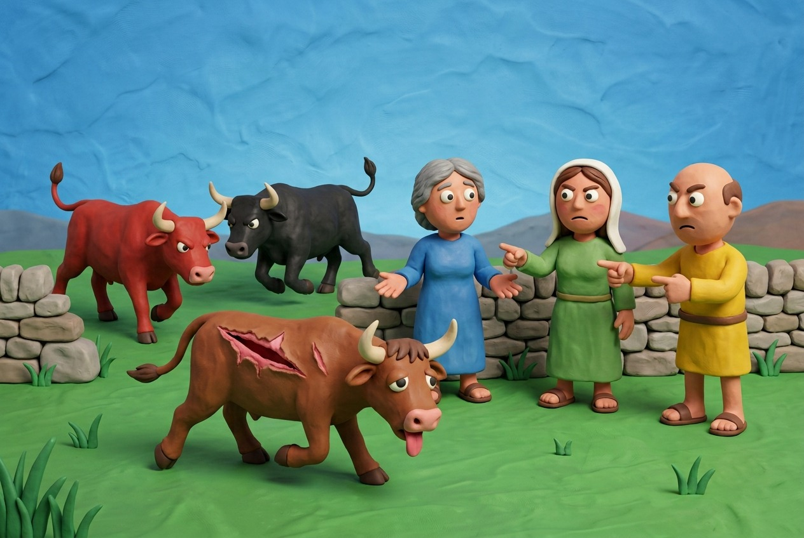
12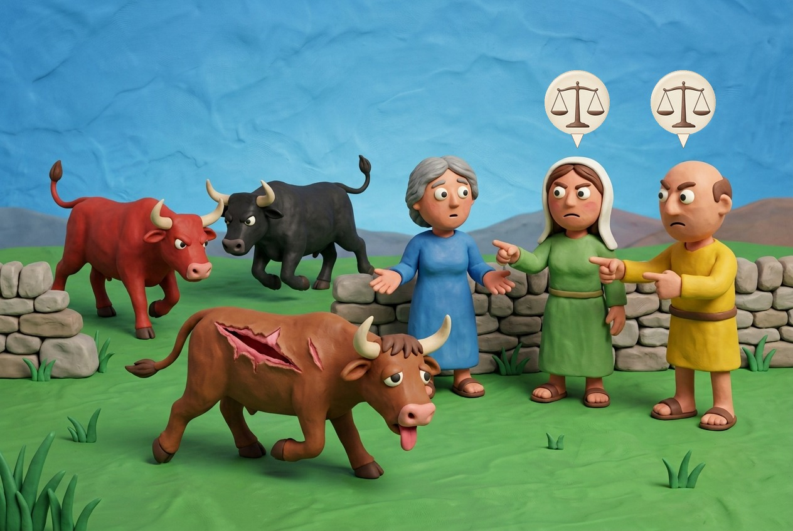
 12
12
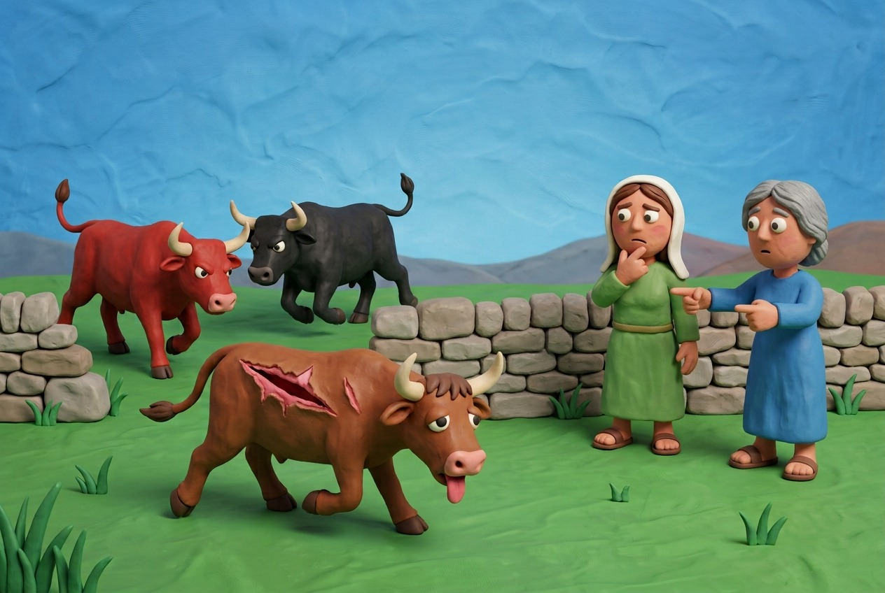
?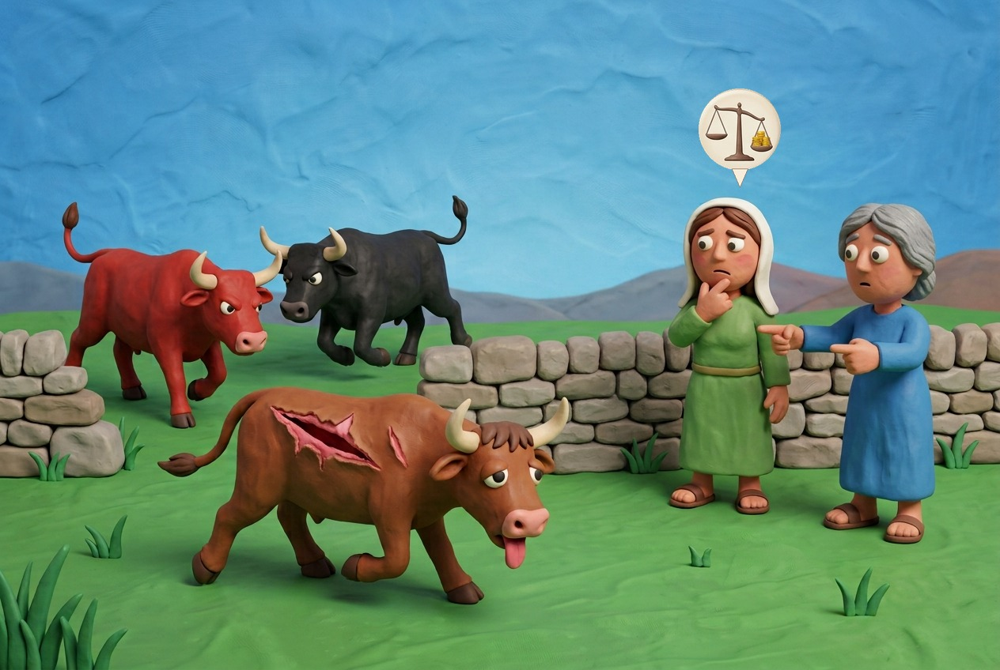
 ?
?
סיכום הפרק
טיוטה לבדיקה. התוכן בלשוננו, מהמשנה, קהתי ור' קולפ.
עקרונות מרכזיים
- רשות הרבים שייכת לכולם: אף אחד לא רשאי להשאיר שם חפצים או חומרים מסוכנים. אם מישהו שובר חפץ שהושאר שם הוא פטור, אבל אם הוא נפגע, הבעלים משלם על הפגיעה. 3:1
- שפיכת מים, הסתרת קוצים או זכוכית, או הנחת גדר קוצים שנפל לרשות הרבים גורמים לחבות על הנזק, גם אם ניסה להרחיק אותם מהאנשים. 3:2
- מה שאדם מוציא לרשות הרבים ומזיק בו, כל הקודם זכה, ובכל זאת הוא משלם על הנזק שהוא גורם. כל מי שמחזיק בבעלות על משהו (הופך את הזבל) חייב לראות שלא יזיק לאיש. 3:3
- זה שמועד משלם על הנזק שהוא גורם אם היה יכול לקום בזמן. אם לא היה יכול, זה אונס והוא פטור. 3:4
- לכל אדם יש זכות ללכת, וזכות לרוץ, ברשות הרבים. התנגשויות שבהן לשניהם יש את הזכות הזו אינן מחייבות באחריות; מי משלם תלוי במי היה לפנים, בעצירה פתאומית, או באזהרה. 3:53:6
- פרנסה לא רשאית לגרום נזק לאחרים: המבקע עצים חייב בכל נזק שיגרום, בכל רשות שהם נמצאים. 3:7
- כששני שוורים או שני אנשים פוגעים זה בזה, התשלום הוא על העודף (ההפרש בין שני הנזקים): חצי ממנו לשוורים תמים, הכל לשוורים מועדים ולאנשים. 3:8
- אותו נזק יכול לחייב את בעל השור אבל לא את האדם, וההיפך (בושת, עין העבד, הורים, אש בשבת). אדם שחייב מיתה וממון מקבל רק עונש מיתה. 3:10
- המוציא מחברו עליו הראיה. ללא הוכחה חיובית הנתבע פטור; שני שוורים עם בעלים אחד עושים את הבעלים חייב. 3:11
מונחי מפתח
- רשות הרבים רשות הרבים 3:13:2
- הרחוב ושטחים משותפים אחרים. חכמים ראו בזה כשייך לכולם, לכן אף אחד לא רשאי להניח שם דברים מסוכנים.
- תם תם 3:8
- שור שנחשב תמים, שלא הועדה נגדו קודם לכן. בעליו משלם חצי נזק, מערך השור עצמו, כך שהוא לעולם לא משלם יותר ממה ששור זה שווה.
- מועד מועד 3:8
- שור שהועדה נגדו. בעליו משלם נזק שלם מיטב הארץ. אדם הוא תמיד מועד.
- חצי נזק, נזק שלם חצי נזק, נזק שלם 3:8
- התשלום עבור הנזק שנגרם: חצי עבור בהמה תמה, המלוא עבור מועד או אדם.
- המוציא מחברו עליו הראיה 3:11
- חובת מי שרוצה תשלום להביא ראיה חיובית. בלעדיה הנתבע נמצא פטור.
דיונים מרכזיים
האם הכוונה משנה משהו לגבי כד שנשבר ברשות הרבים? 3:1
הוא חייב על הנזק, ללא הבחנה (קולפ: ככל הנראה הם סוברים שהוא חייב גם אם זה נשבר במקרה).
רק אם שבר בכוונה; ללא כוונה הוא לא חייב.
האם רבן שמעון בן גמליאל חולק על הדעה הראשונה? 3:3
זה ששם את הקישו חייב על נזקים, וכל מי שבא ראשון רשאי לקחת אותו.
כל המשאיר דברים מפריעים ברשות הרבים חייב לשלם אם הם גורמים נזק, וכל מי שמגיע ראשון רשאי לקחת אותם. קולפ שואל האם יש בכלל מחלוקת.
מה שור תם חייב על הזקת אדם? 3:8
בעל השור משלם רק חצי נזק.
אפילו שור תם שפגע באדם משלם נזק שלם על הפגיעה החמורה יותר.
כיצד מיושם שמות כא:לה? 3:9
עם שני שוורים ששווים 200 ונבלה חסרת ערך, מוכרים את השור החי ומחלקים את מחירו.
זאת ההלכה, אבל היא ממלאת רק חצי מהפסוק. הפסוק מדבר על מכירת השור החי וגם על חלוקת השור המת, כמו כשהנבלה שווה 50.